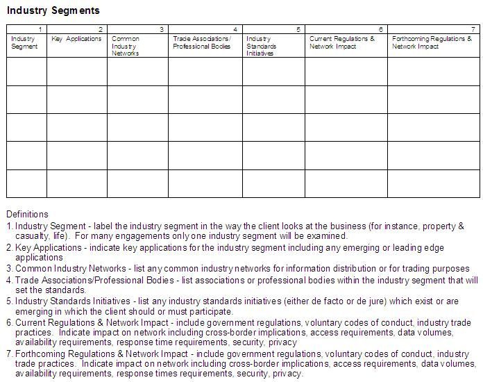
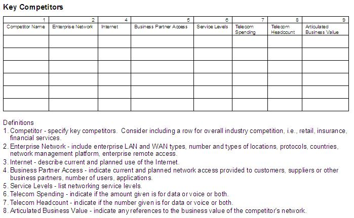

| Artifact: Industry Networking Profile (ARC 313) |
 |
|
The Industry Networking Profile provides an industry context for network recommendations and comparison points for the client’s network. Understanding industry specific networking activities allows for networking recommendations which capitalize on industry-wide efforts or help to comply with standards or regulations. For instance, a client may benefit from joining a common industry network for trading purposes (example: the Insurance Value Added Network in the United States or Canada) or high availability may be designed into a bank’s network to assist in meeting governmental reporting requirements. Understanding the networking activities of key competitors may provide insights on how these competitors are contributing to business success in:
|
| Main Description |
Each industry segment includes information about key applications, any common industry networks, industry standards
initiatives and any industry specific regulations that may have impact on the client’s network. Each competitor profile
includes information about the competitor’s enterprise network, use of the Internet, access given to business partners,
service levels, telecommunications and headcount and any articulated business value. |
|---|---|
| Brief Outline | The following matrices show the types of notation used in constructing the Industry Networking Profile. Since this work product is essentially a matrix using data appropriate to the individual engagement, the user has freedom to add/subtract/modify column definitions based on the circumstances of the particular engagement. Notation   |
| Examples |
|---|
The industry segment section may include information about standards that impact the client’s business. In turn, these standards may impact network decisions. For instance, if banking regulations require high availability for automated teller machines (ATMs) or significant fines will be levied, the wide area network recommendations must include techniques or design features for providing the appropriate level of availability. IT standards compliance may also be part of an engagement but the Industry Networking Profile focuses on industry standards in the client’s area of business rather than internal or external IT standards for equipment or software. Avoid indicating to a client that you intend to provide information about specific competitors that you receive from inside IBM due IBM’s business relationships with those competitors. If you do agree to use IBM resources, you may need to generalize your research results. In effect, this turns key competitor research into industry segment research. Some typical research techniques are document review, online searching and e-mail or telephone inquiries. Research resources include industry experts, trade and professional associations, industry publications and market research firms. Part of the IBM sales and services organization is organized into industry solution units (ISUs). Each ISU is charged with providing IBM hardware, software and services tailored to a specific industry. Examples of ISUs are Communications (formerly Telecommunications and Media), Distribution, Industrial, Finance and Insurance. Individuals assigned to the ISUs are knowledgeable about the industries they represent. To find a contact in an ISU, look at the Global Industries Intranet homepage. The URL for the homepage is http://w3-1.ibm.com/industries. For industry segment information, validate references to common industry networks, trade or professional associations, standards and regulations by cross checking the references with the sponsoring bodies. For industry segments, sponsoring bodies are often trade or professional associations, standards organizations or governments. Most industries have trade or professional associations that cut across company lines. A trade or professional association is in the business of providing support and information concerning the industry it represents. A source of trade and professional associations arranged by industry is the Encyclopedia of Associations. This reference book is available in many libraries. Trade and professional associations may have special interest groups focused on information technology. Some associations are devoted to information technology or networking in a specific industry. They can be rich resources for industry information with a technological orientation. Many trade and professional associations use the Internet to disseminate information about their industries. Examples include:
The Encyclopedia of Associations lists homepage addresses for associations. If IBM is a corporate member of an association or if you can find an IBM employee who is a member (sometimes the association will help you with this), you can often arrange to use member benefits. This can sometimes mean access to information that is not available to non-members. In addition, trade magazines may have IT special issues or be focused on IT for specific industry segments. For instance, Chain Store Age (http://www.chainstoreage.com/) publishes an annual survey of IT in the retailing industry while Insurance Networking focuses on networking in the insurance industry. Market research firms also examine different industry segments and how they use IT to support business objectives. Datapro, Yankee Group, IDC and Gartner Group are several examples. You may be able to borrow market research reports from IBM’s Marketing Analysis Information Center (MAIC) in White Plains, NY. If the MAIC has a second copy of a report, you can sometimes arrange to borrow it for a brief period of time. You can also visit the MAIC to use their collection. The MAIC collection is indexed in the IBM Technical Information Retrieval Center’s (ITIRC) MDOC database. Selected market research reports are included, in full text, in ITIRC’s COMP database. To access the ITIRC databases use http://w3.itirc.ibm.com/. COMP access is IBM Confidential. Access via ITIRC requires management approval. COMP is also available to registered users of ViewBlue. If IBM has a business relationship with a marketing research firm, you may be able to talk to an analyst or receive additional information or reports. You can search ITIRC’s other business and engineering databases for magazine articles. Some of the articles are reproduced in entirety. ITIRC also offers a fulfillment service for magazine articles. IBM libraries and university libraries are other good sources of magazine articles. For the key competitor information, you may be able to cross check public information with information gathered from IBM’s client team. However, in some cases, the IBM client team will not be willing to share details with you. Also, in most cases, it should be made clear to the client that this is a research exercise where only publicly available sources are used. You might use privately available sources for verification of what is available publicly. |
| Impact of not having | Making network recommendations without an understanding of industry specific networking activities may cause the client to build a piece of network infrastructure which could have more cost effectively been bought by joining a common industry network. Also, if industry specific standards and regulations are not investigated, the recommended network might not support compliance or even might work at cross-purposes to compliance. Making network recommendations without understanding competitors’ networks leaves out any insights that may be gathered during the research process. |
|---|---|
| Reasons for not needing | The industry specific section of this work product may not be necessary for a LAN engagement focused strictly on branch office activities with no requirements for data transfer or communication with a central site or outside organization. The client specific section of this work product is not required. In fact, unless the client contracts specifically for this activity, it should not be performed. When it is performed, the client should understand that this is a research exercise. A finite time period for the research should be set and, in most cases, it should be clear that publicly available sources will be used in performing the research. If privately available sources are reliable and available they can be used but are typically used to over deliver on this part of the project. Also, bear in mind that a client may choose to compare itself against other organizations using business criteria which does not involve their competition. For example, if the client has grown through acquisition, the client may wish to examine networking activities in companies that have also grown through multiple acquisitions. |
| Guidelines | |
|---|---|
| Estimation Considerations |
| © Copyright IBM Corp. 1987, 2012 All Rights Reserved Property of IBM These materials are intended only for use as part of an IBM engagement |